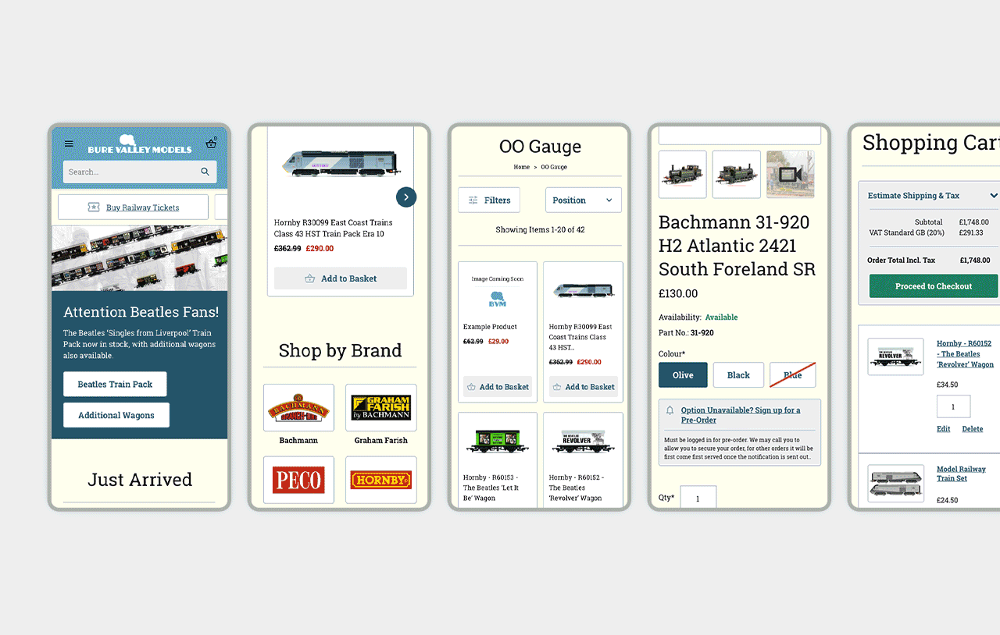
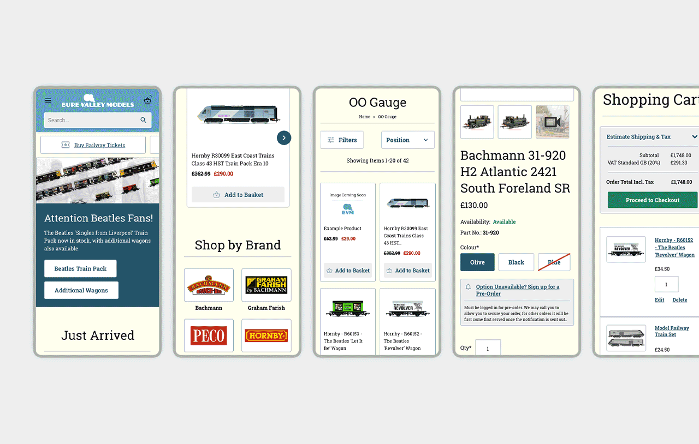

Designer based in Merseyside.
Product Design │ UX & UI │ Motion Graphics │ Digital & Print │ Branding
Check out my work or get in touch: smharrod@outlook.com
Designer based in Merseyside.
Product Design │ UX & UI │ Motion Graphics │ Digital & Print │ Branding
Check out my work or get in touch: smharrod@outlook.com


I designed Cybertill's Licence Manager and Configuration Tools, creating scalable, intuitive systems for managing licences and settings across a wide range of retailer sizes. The designs incorporated customer feedback, streamlined workflows, and prototyped previews to demonstrate impacts of setting changes.

The Donor Station was designed to enhance charity donation experiences with intuitive self-service features. Balancing security, ease of use, and customisation, the design incorporated research, user testing, and flexible UI solutions to cater to various hardware types and customer needs.

I redesigned the AlleyCatz website to make finding and purchasing school uniforms quick and easy. Post-launch, I resolved a checkout issue using insights from Hotjar and VAS AI, improving the collection process.

I helped improve Cybertill’s marketing and help sites, focusing on usability and engagement. Updates included a new homepage, enhanced search functionality, and a better user journey informed by data analysis and user feedback.

I redesigned Cybertill’s integrated offer management system, simplifying a complex workflow into an intuitive single-screen process. The update introduced more flexible product management and incorporated customer feedback to ensure a seamless experience.
 
